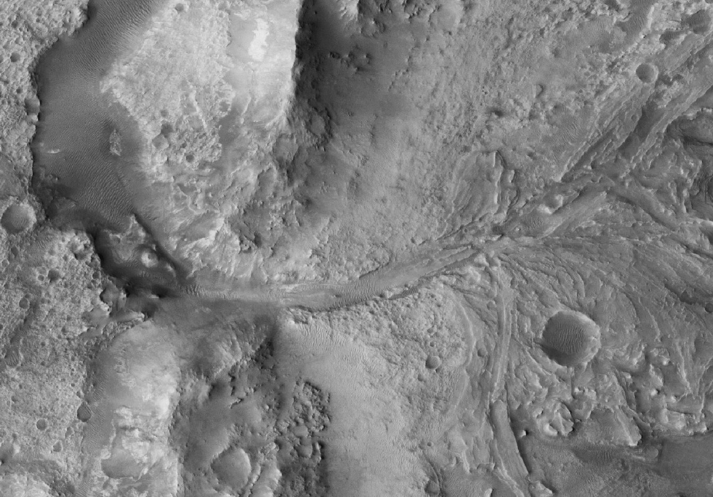

Basemap: Murray Lab global CTX mosaic (5 m/pixel native, shown at about 10 m/pixel), covering 77.22318–77.41956°E, 18.44176–18.57188°N. Crater marks come from model/crater_detector.py (matched-filter proposals checked by a random-forest classifier; no human labels, so false marks remain: bright outcrops and rock piles are sometimes marked, and some real craters are missed; the detector runs with a looser setting than usual because this area has few craters). Overlay positions for the delta outline, channel, route and samples were traced by eye on the earlier, larger map and re-projected here by latitude and longitude, so they were anchored to the published landing coordinates (18.4446°N, 77.4509°E), which lie just east of this view; places outside it are not drawn. Treat them as approximate; sample positions are placed by named area, not by individual rover fix.
model/crater_detector.py run on the CTX mosaic above. Output is the crater data embedded in this page (craters-data.js).